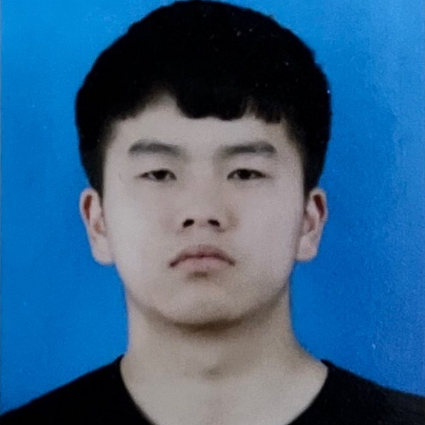

Links
|
|
Homepage @Universität Bremen |
| 0000-0002-6850-9570 | |
| GyLOsRwAAAAJ | |
| Hui-Liu-149 | |
| 57196004640 | |
| 2146672447 | |
| ACZ-9903-2022 | |
| Your contribution is welcome: | |
| Innovative Technologies of Acquiring, Processing, Modeling, or Utilizing Biomedical and Physiological Signals from Biosensing | |
| Electroencephalogram/Electromyogram-Based Sensing Technologies for Biomedical Applications: Challenges and Possible Applications | |
|
|
Sensors for Human Activity Recognition: 3rd Edition |
Research Keywords and Highlights
 Google global scholar rankings by field labels: ● Biosignals (12) ● Hidden Markov Models (3) ● Sensor Data Fusion (12) ● Chinese Music (1) ● Snart Building (14) |
 Developed the first intelligent knee bandage: ● Integrating multimodal wearable sensors ● Recognizing human activities in real-time ● Assisting rehabilitation ● Best Paper Award (Student Author) of |
Publications (88)
|
|
|
Biomedical Engineering Systems and Technologies. Guarino, M. P., Hotta, K., Yousef, M., Liu, H., Saggio, G., Fred, A., and Gamboa, H. (eds., 2025). Springer Nature Switzerland. |
|
Sensors for Human Activity Recognition II. Liu, H., Gamboa, H., and Schultz, T. (eds., 2025). MDPI. |
|
Proceedings of the 17th International Joint Conference on Biomedical Engineering Systems and Technologies – (Volume 1). Guarino, M. P., Hotta, K., Yousef, M., Liu, H., Saggio, G., Fred, A., and Gamboa, H. (eds., 2024). INSTICC. |
|
Sensors for Human Activity Recognition. Liu, H., Gamboa, H., and Schultz, T. (eds., 2023). MDPI. |
|
Biosignal Processing and Activity Modeling for Multimodal Human Activity Recognition. Liu, H. (2021). PhD thesis, University of Bremen. |
|
|
|
|
|
Muscle Synergy and Co-Contraction Effects on Joystick Manipulation. Ouyang, C., Cai, L.*, Yan, S., Zhang, T., Zhu, J., Chen, L., and Liu, H.* (2025). Biomedical Engineering Systems and Technologies, Springer Nature Switzerland. |
|
EMG-Based Action Unit Recognition: Feature Engineering, Machine Learning, and Real-Time Classification. Liu, H.*, Veldanda, A., Koschke, R., Schultz, T., and Küster, D.* (2025). Biomedical Engineering Systems and Technologies, Springer Nature Switzerland. |
|
High-Level Features for Human Activity Recognition and Modeling. Hartmann, Y.*, Liu, H., and Schultz, T. (2023). Biomedical Engineering Systems and Technologies. Springer Nature Switzerland. |
|
|
|
Taxonomy and Real-Time Classification of Artifacts during Biosignal Acquisition: A Starter Study and Dataset of ECG. Liu, H.*, Zhang, S., Gamboa, H., Xue, T., Zhou, C., and Schultz, T. (2024). IEEE Sensors Journal, 24(6):9162-9171. ISSN: 1530-437X. |
|
MS2OD: Outlier Detection Using Minimum Spanning Tree and Medoid Selection. Li, J., Li, JW, Wang, C., Verbeek F. J.*, Schultz, T., and Liu, H.* (2024). Machine Learning: Science and Technology, 5:015025. IOPscience. ISSN: 2632-2153. |
|
Muscle Synergies in Joystick Manipulation. Cai, L., Yan, S., Ouyang C., Zhang, T., Zhu, J., Chen, L., Ma, X.*, and Liu, H.* (2023). Frontiers in Physiology, 14:1282295. ISSN: 1664-042X. |
|
Outlier Detection Using Iterative Adaptive Mini-Minimum Spanning Tree Generation with Applications on Medical Data. Li, J., Li, JW, Wang, C, Verbeek, F. J.*, Schultz T., and Liu H.* (2023). Frontiers in Physiology, 14:1233341. ISSN: 1664-042X. |
|
Robust Human Locomotion and Localization Activity Recognition over Multisensory. Khan, D., Alonazi, M., Abdelhaq, M.*, Al Mudawi, N., Algarni, A., Jalal, A.*, and Liu, H.* (2024). Frontiers in Physiology, 15:1344887. ISSN: 1664-042X. |
|
Efficient Wi-Fi-Based Human Activity Recognition Using Adaptive Antenna Elimination. Jannat, M.K.A., Islam, M.S., Yang, S-H*, and Liu, H.* (2023). IEEE Access, 11:105440-105454. |
|
Biosensor-Driven IoT Wearables for Accurate Body Motion Tracking and Localization. Almujally, N. A., Khan, D., Al Mudawi, N, Alonazi, M., Alazeb, A., Algarni, A., Jalal, A.*, and Liu, H.* (2024). Sensors 24(10):3032. |
|
Remote Intelligent Perception System for Multi-Object Detection. Alazeb, A., Chughtai, B. R., Al Mudawi, N., Alqahtani, Y., Alonazi, M., Aljuaid, H., Jalal, A.*, and Liu, H.* (2024). Frontiers in Neurorobotics, 18:1398703. ISSN: 1662-5218. |
|
|
|
|
|
|
|
Integrated Neural Network Framework for Multi-Object Detection and Recognition Using UAV Imagery. Alshehri, M., Xue, T., Mujtaba, G., Alqahtani, Y., Almujally, N., Jalal, A.*, Liu, H.* (2025). Frontiers in Neurorobotics. ISSN: 1662-5218. |
|
ANN-Assisted Optimization of a Solar-to-X System for Green Hydrogen Production, CO₂ Capture, and Methanol-Based Energy Storage. Liu, H.*, Liu, W., Wu, Y., Du, Z., Xue, T., Manesh A. M., Xu, J*, and Jiang, T.* (2025). Energy, 333:137350. Elsevier. ISSN: 0360-5442. |
|
A New Synthesized Framework of Artificial Neural Network-Based Sensitivity Analysis for Building Energy Performance: A Case Study of Shanghai, China. Hui Liu*, Yanfeng Wu, Wenbiao Liu, Tingting Xue, Jun Xu (2025). Building and Environment, 283:113290. Elsevier. ISSN: 0360-1323. |
|
A Hybrid Deep Learning Pipeline for Wearable Sensors-based Human Activity Recognition. Algarni, A., Abro, I. A., Alshehri, M., AlQahtani, Y., Alshahrani, A., and Liu, H.* (2025). Computer, Materials & Continua. Tech Science Press. ISSN: 1546-2218. |
|
A Novel Multi-Modal Rehabilitation Monitoring Over Human Motion Intention Recognition. Kamal, S., Alshehri, M., Alqahtani, Y., Alshahrani, A., Almujally, N., Jalal, A.*, Liu, H.* (2025). Frontiers in Bioengineering and Biotechnology, 13:1568690. ISSN: 2296-4185. |
|
Intelligent Biosensors for Human Movement Rehabilitation and Intention Recognition. Rafiq, M., Almujally, N., Algarni, A., Jalal, A.*, and Liu, H.* (2025). Frontiers in Bioengineering and Biotechnology, 13:1558529. ISSN: 2296-4185. |
|
A Novel Deep Learner for Human Behavior Prediction over Public Video Surveillance. Alabdullah, B, Fatima, B. B., Alhasson, H. F., Alshehri, M., AlQahtani, Y., Albhassabi, N., and Liu, H.* (2025). IEEE Access, 13:108718-108731. |
|
Wearable Sensors-based Assistive Technologies for Patient Health Monitoring. Almujally, N. A., Khan, D., Al Mudawi, N., Alonazi, M., Algarni, A., Jalal, A.*, and Liu, H.* (2025). Frontiers in Bioengineering and Biotechnology, 13:1437877. ISSN: 2296-4185. |
|
Multimodal Intelligent Biosensors Framework for Fall Disease Detection and Healthcare Monitoring. Abro, I. A., Alharbi, S. S., Alshammari, N. S., Algarni, S., Almujally, N. A., Jalal, A.*, and Liu, H.* (2025). Frontiers in Bioengineering and Biotechnology, 13:1544968. ISSN: 2296-4185. |
|
Towards Human Modeling for Human-Robot Collaboration and Digital Twins in Industrial Environments: Research Status, Prospects, and Challenges. Xia, G.*, Ghrairi, Z., Wuest, T., Hribernik, K., Heuermann, A., Liu, F., Liu, H., Thoben, K. (2025). Robotics and Computer-Integrated Manufacturing, 95:103043. |
|
Advanced Leaf Classification using Multi-Layer Perceptron for Smart Crop Management. Mumtaz S., Alshehri M., AlQahtani Y., Alshahrani A., Alabdullah, B., Alhasson, H. F., Jalal, A.*, and Liu, H.* (2025). IEEE Access, 13:105579-105589. |
|
Multi-Modal Remote Sensory Learning for Multi-Objects over Autonomous Devices. Naseer, A., Almudawi, N., Aljuaid, H., Alazeb, A., Alqahtani, Y., Algarni, A., Jalal, A.*, and Liu, H.* (2025). Frontiers in Bioengineering and Biotechnology, 13:1430222. ISSN: 2296-4185. |
|
A Deep Learning Framework for Healthy LifeStyle Monitoring and Outdoor Localization. Rafiq, M., Albhassabi, N., Alhasson, H. F., AlHammadi, D. A., Alshehri, M., Jalal, A.*, and Liu, H.* (2025). IEEE Access, 13:118695-118705. |
|
Thermo-Environ-Economic Analysis of a Novel Solar-Assisted Heat Pump System; Comparison with Conventional Single Stage and Cascaded Air Source Heat Pumps. Afshin, M. M. and Liu, H.* (2025). Energy, 322:135647. Elsevier. ISSN: 0360-5442. |
|
Vision Sensor for Automatic Recognition of Human Activities via Hybrid Features and Multi-Class Support Vector Machine. Kamal, S., Alhasson, H. F., Alnusayri, M., Alatiyyah, M., Aljuaid, H., Jalal, A.*, and Liu, H.* (2025). Sensors, 25(1):200. |
|
Enhancing Smart Building Performance with Waste Heat Recovery: Supply-Side Management, Demand Reduction, and Peak Shaving via Advanced Control Systems. Liu, H., Du, Z., Xue, T., and Jiang, T.* (2025). Energy and Buildings, 327:115070. Elsevier. ISSN: 0378-7788. |
|
Leaf Classification for Sustainable Agriculture and In-Depth Species Analysis. Mumtaz, S., Alhammadi, D. A., Jalal, A.*, and Liu, H.* (2025). IEEE Access, 13:17043-17053. |
|
IoT Powered RNN for Improved Human Activity Recognition with Enhanced Localization and Classification. Mudawi, N. A., Azmat, U., Alazeb, A., Alhasson, H. F., Alabdullah, B., Rahman, H., Liu, H.*, and Jalal, A.* (2025). Scientific Reports, 15:10328. Springer Nature. ISSN: 2045-2322. |
|
Attention-Driven Emotion Recognition in EEG: A Transformer-Based Approach with Cross-Dataset Fine-Tuning. Ghous, G., Najam, S., Alshehri, M., Alshahrani, A., AlQahtani, Y., Jalal, A.*, and Liu, H.* (2025). IEEE Access, 13:69369-69394. |
|
Unmanned Aerial Vehicle based Multi-Person Detection via Deep Neural Network Models. Alshehri, M., Zahoor, L., Alqahtani, Y., Alshahrani, A., Al-Hammadi, D. A.,Jalal, A.*, and Liu, H.* (2025). Frontiers in Neurorobotics, 19:1582995. ISSN: 1662-5218. |
|
Advanced Biosignal-RGB Fusion with Adaptive Neurofuzzy Classification for High-Precision Action Recognition. Abro, I. A., Alhasson, H. F., Alharbi, S. S., Alatiyyah, M., AlHammadi, D. A., Jalal, A.*, and Liu, H.* (2025). IEEE Access, 13:57287-57310. |
|
Evaluating the Potential of Microdroplet Flow in Two-Phase Biocatalysis: A Systematic Study. Xiang, L., Solarczek, J., Krajka, V., Liu, H., Ahlborn, L., Schallmey, A., and Constantinou, I.* (2025). ACS Applied Materials & Interfaces, 17(3):4776–4787. ACS Publications. |
|
A Hybrid Approach for Sports Activity Recognition Using Key Body Descriptors and Hybrid Deep Learning Classifier. Tayyab M., Alateyah, S. A., Alnusayri, M., Alatiyyah, M., AlHammadi, D. A., Jalal, A.*, Liu, H.* (2025). Sensors, 25(2):441. |
|
An Integrated Artificial Intelligence-Driven Approach to Multi-Criteria Optimization of Building Energy Efficiency and Occupants' Comfort: A Case Study. Liu, H., Du, Z., Xue, T., and Jiang, T.* (2025). Journal of Building Engineering, 103:111944. Elsevier. ISSN: 2352-7102. |
|
Human Pose Estimation and Event Recognition via Feature Extraction and Neuro-Fuzzy Classifier. Hanzla, M., Alshammari, N. S., Alharbi, S. S., Wahid, W., Almujally, N. A., Jalal, A.*, Liu, H.* (2025). IEEE Access, 13:37328-37343. |
|
Drone-based Public Surveillance using 3D Point Clouds and Neuro-Fuzzy Classifier. Abbas, Y., Alarfaj, A. A., Alabdulqader, E. A., Algarni, A., Jalal, A., Liu, H.* (2025). Computer, Materials & Continua, 82(3):4759-4776. Tech Science Press. ISSN: 1546-2218. |
|
Remote Sensing Surveillance using Multilevel Feature Fusion and Deep Neural Network. Zahoor, L., Alhasson, H. F., Alnusayri, M., Alatiyyah, M., AlHammadi, D. A., Jalal, A.*, Liu, H.* (2025). IEEE Access, 13:38282-38300. |
|
TPRO-NET: An EEG-Based Emotion Recognition Method Reflecting Subtle Changes in Emotion. Zhang, X., Cheng, X.*, and Liu, H.* (2024). Scientific Reports, 14:13491. Springer Nature. ISSN: 2045-2322. |
|
Semantic Segmentation and YOLO Detector over Aerial Vehicle Images. Quresh, A. M., Butt, A. H., Alazeb, A., Al Mudawi, N., Alonazi, M., Almujally, N. A., Jalal, A., and Liu, H.* (2024). Computer, Materials & Continua, 80(2):3315-3332. Tech Science Press. ISSN: 1546-2218. |
|
Template-Based Synergy Extrapolation Analysis for Prediction of Muscle Excitations. Li, K., Wang, D., Chen, Z, Guo, D, Pan, S., Liu, H., Zhou, C.*, and Ye, X.* (2024). Physiological Measurement, 45(9):095016. IOPScience. |
|
A Robust Multimodal Detection: Physical Exercise Monitoring in Long-Term Care Environments. Al Mudawi, N., Batool M., Alazeb A., Alqahtani Y., Almujally, N. A., Algarni A., Jalal, A.*, and Liu, H.* (2024). Frontiers in Bioengineering and Biotechnology, 12:1398291. ISSN: 2296-4185. |
|
Robust Human Interaction Recognition Using Extended Kalman Filter. Jalal, A., Bukht, T. F. N., Alazeb, A., Al Mudawi, N., Alabdullah, B, Alnowaiser, K., and Liu, H.* (2024). Computer, Materials & Continua, 81(2):2987-3002. Tech Science Press. ISSN: 1546-2218. |
|
Innovative Healthcare Solutions: Robust Hand Gesture Recognition of Daily Life Routines Using 1D CNN. Al Mudawi, N., Ansar, H., Alazeb, A., Aljuaid, H., Alqahtani, Y., Algarni, A., Jalal, A.*, and Liu, H.* (2024). Frontiers in Bioengineering and Biotechnology, 12:1401803. ISSN: 2296-4185. |
|
Human Activity Recognition, Monitoring, and Analysis Facilitated by Novel and Widespread Applications of Sensors. Liu, H.*, Gamboa, H., and Schultz, T. (2024). Sensors, 24(15):5250. |
|
Multi-Modal Remote Perception Learning for Object Sensory Data. Almujally, N. A., Rafique, A. A., Mudawi, N. A., Alazeb, A., Alonazi, M., Algarni, A., Jalal, A.*, and Liu, H.* (2024). Frontiers in Neurorobotics, 18:1427786. ISSN: 1662-5218. |
|
Enhanced Data Mining and Visualization of Sensory-Graph-Modeled Datasets through Summarization. Hashmi, S. J., Alabdullah, B., Al Mudawi, N., Algarni, A., Jalal, A.*, and Liu, H.* (2024). Sensors, 24(14):4554. |
|
Understanding Naturalistic Facial Expressions with Deep Learning and Multimodal Large Language Models. Bian, Y., Küster, D., Liu H., and Krumhuber, E. G.* (2024). Sensors, 24(1):126. |
|
Cardiorespiratory Response to Workload Volume and Ergonomic Risk: Automotive Assembly Line Operators’ Adaptations. Furk, D., Silva, L.*, Dias, M., Fujão, C., Probst, P., Liu, H., Gamboa, H. (2024). Applied Sciences, 14(9):3921. |
|
Hybrid Modeling on Reconstitution of Continuous Arterial Blood Pressure Using Finger Photoplethysmography. Shi, W., Zhou, C., Zhang, Y., Li, K., Ren, X., Liu, H.*, and Ye, X.* (2023). Biomedical Signal Processing and Control, 85:104972. Elsevier. ISSN: 1746-8094. |
|
Sensor-Based Human Activity and Behavior Research: Where Advanced Sensing and Recognition Technologies Meet. Liu, H.*, Gamboa, H., and Schultz, T. (2023). Sensors, 23(1):125. |
|
Feature-Based Information Retrieval of Multimodal Biosignals with a Self-Similarity Matrix: Focus on Automatic Segmentation. Rodrigues, J.*., Liu, H.* (co-first), Folgado, D., Belo, D., Schultz, T., and Gamboa, H.* (2022). Biosensors, 12(12):1182. MDPI. ISSN: 2079-6374. |
|
Bell Shape Embodying Zhongyong: The Pitch Histogram of Traditional Chinese Anhemitonic Pentatonic Folk Songs. Liu, H.*, Jiang, K., Gamboa, H., Xue, T., and Schultz, T. (2022). Applied Sciences, 12(16):8343. |
|
TSSEARCH: Time Series Subsequence Search Library. Folgado, D. Barandas, M., Antunes, M., Nunes, M. L., Liu, H., Hartmann, Y., Schultz, T., and Gamboa, H. (2022). SoftwareX, 18:101049. Elsevier. |
|
CSL-SHARE: A Multimodal Wearable Sensor-Based Human Activity Dataset. Liu, H.*, Hartmann, Y., and Schultz, T. (2021). Frontiers in Computer Science, 3:759136. |
|
TSFEL: Time Series Feature Extraction Library. Barandas, M., Folgado, D., Fernandes, L., Santos, S., Abreu, M., Bota, P., Liu, H., Schultz, T., and Gamboa, H. (2020). SoftwareX, 11:100456. Elsevier. |
|
|
|
The Bigger the Better? Towards EMG-Based Single-Trial Action Unit Recognition of Subtle Expressions. Küster, D., Rammohan, R. A., Liu, H., Schultz, T., Koschke, R. (2025). In BIOSTEC 2025 - Proceedings of the 18th International Joint Conference on Biomedical Engineering Systems and Technologies - Volume 1: BIODEVICES, pages 100-110. INSTICC, SciTePress. |
|
A Wearable Real-Time Human Activity Recognition System using Biosensors Integrated into a Knee Bandage. Liu, H., and Schultz, T. (2019). In BIOSTEC 2019 - Proceedings of the 12th International Joint Conference on Biomedical Engineering Systems and Technologies - Volume 1: BIODEVICES, pages 47–55. INSTICC, SciTePress. |
|
Merged Pitch Histogram and Pitch-Duration Histogram. Liu, H., Xue, T., and Schultz, T. (2022). In SIGMAP 2022 - Proceedings of the 19th International Conference on Signal Processing and Multimedia Applications, pages 32-39. INSTICC, SciTePress. |
|
Interpretable High-Level Features for Human Activity Recognition. Hartmann, Y., Liu, H., Lahrberg, S., and Schultz, T. (2022). In BIOSTEC 2022 - Proceedings of the 15th International Joint Conference on Biomedical Engineering Systems and Technologies - Volume 4: BIOSIGNALS, pages 40-49. INSTICC, SciTePress. |
|
Longitudinal Data Acquisition for AI Services in Long-Term Care Facilities for Older Adults. Paul, R. E., Kock, P., Hartmann, Y., Ball, E., Seibert, K., Liu, H., and Schultz, T. (2025). In BIOSTEC 2025 - Proceedings of the 18th International Joint Conference on Biomedical Engineering Systems and Technologies - Volume 2: HEALTHINF, pages 1099-1110. INSTICC, SciTePress. |
|
LSTM-MorA: Melody-Accompaniment Classification of MIDI Tracks. Liu, H.*, Flaack, L., Zhang, S., and Schultz, T. (2024). In ICANN 2024 - 33rd International Conference on Artificial Neural Networks, pages 443-485. Springer, Cham. |
|
Examining the Effects of Human-Likeness of Avatars on Emotion Perception and Emotion Elicitation. Zhang, S., Faruk, O., Porzel, R., Küster, D., Schultz, T., and Liu, H. (2024). In ABC 2024 - 6th International Conference on Activity and Behavior Computing, pages 1-12. IEEE. |
|
Comfort Assessment Method of EEG-Based Exoskeleton Walking-Assistive Device. Zhou, C., Wang, H., Li, K., Liu, H., and Ye, X. (2024). In BIOSTEC 2024 - Proceedings of the 17th International Joint Conference on Biomedical Engineering Systems and Technologies - BIOSIGNALS, pages 675-682. INSTICC, SciTePress. |
|
Can Electromyography Alone Reveal Facial Action Units? A Pilot EMG-Based Action Unit Recognition Study with Real-Time Validation. Veldanda, A., Liu, H., Koschke, R., Schultz, T., and Küster, D. (2024). In BIOSTEC 2024 - Proceedings of the 17th International Joint Conference on Biomedical Engineering Systems and Technologies - BIODEVICES, pages 142–151. INSTICC, SciTePress. |
|
Really Can't Hold on Anymore? Physiological Indicators Versus Self-Reported Motivation Drop During Jogging. Zhang, S., Kolensnikov, S., Rennspieß, T., Porzel, R., Schultz, T., and Liu, H. (2024). In BIOSTEC 2024 - Proceedings of the 17th International Joint Conference on Biomedical Engineering Systems and Technologies - BIOSIGNALS, pages 821-831. INSTICC, SciTePress. |
|
Associating Endpoint Accuracy and Similarity of Muscle Synergies. Cai, L., Yan, S., Ouyang, C., Zhang, T., Zhu, J., Chen, L., and Liu, H. (2024). In BIOSTEC 2024 - Proceedings of the 17th International Joint Conference on Biomedical Engineering Systems and Technologies - BIOSIGNALS, pages 683-694. INSTICC, SciTePress. |
|
Integrated Driver Pose Estimation for Autonomous Driving. Cao, X., Hu, W., and Liu, H. (2024). In BIOSTEC 2024 - Proceedings of the 17th International Joint Conference on Biomedical Engineering Systems and Technologies - BIOSIGNALS, pages 695-702. INSTICC, SciTePress. |
|
On a Real Real-Time Wearable Human Activity Recognition System. Liu, H., Xue, T., and Schultz, T. (2023). In BIOSTEC 2023 - Proceedings of the 16th International Joint Conference on Biomedical Engineering Systems and Technologies - WHC, pages 711-720. INSTICC, SciTePress. |
|
Interactive and Interpretable Online Human Activity Recognition. Hartmann, Y., Liu, H., and Schultz, T. (2022). In PERCOM 2022 - 20th IEEE International Conference on Pervasive Computing and Communications Workshops and other Affiliated Events, pages 109–111. IEEE. |
|
A Practical Wearable Sensor-Based Human Activity Recognition Research Pipeline. Liu, H., Hartmann, Y., and Schultz, T. (2022). In BIOSTEC 2022 - Proceedings of the 15th International Joint Conference on Biomedical Engineering Systems and Technologies - Volume 5: HEALTHINF, pages 851-860. INSTICC, SciTePress. |
|
How Long Are Various Types of Daily Activities? Statistical Analysis of a Multimodal Wearable Sensor-Based Human Activity Dataset. Liu, H., and Schultz, T. (2022). In BIOSTEC 2022 - Proceedings of the 15th International Joint Conference on Biomedical Engineering Systems and Technologies - Volume 5: HEALTHINF, pages 684-692. INSTICC, SciTePress. |
|
Hidden Markov Model and Its Application in Human Activity Recognition and Fall Detection: A Review. Xue, T., and Liu, H. (2022). Communications, Signal Processing, and Systems. Springer, Singapore. |
|
Motion Units: Generalized Sequence Modeling of Human Activities for Sensor-Based Activity Recognition. Liu, H., Hartmann, Y., and Schultz, T. (2021). In EUSIPCO 2021 - 29th European Signal Processing Conference. IEEE. |
|
Feature Space Reduction for Human Activity Recognition Based on Multi-Channel Biosignals. Hartmann, Y., Liu, H., and Schultz, T. (2021). In BIOSTEC 2021 - Proceedings of the 14th International Joint Conference on Biomedical Engineering Systems and Technologies - Volume 4: BIOSIGNALS, pages 215-222. INSTICC, SciTePress. |
|
Feature Space Reduction for Multimodal Human Activity Recognition. Hartmann, Y., Liu, H., and Schultz, T. (2020). In BIOSTEC 2020 - Proceedings of the 13th International Joint Conference on Biomedical Engineering Systems and Technologies - Volume 4: BIOSIGNALS, pages 135–140. INSTICC, SciTePress. |
|
ASK: A Framework for Data Acquisition and Activity Recognition. Liu, H., and Schultz, T. (2018). In BIOSTEC 2018 - Proceedings of the 11th International Joint Conference on Biomedical Engineering Systems and Technologies - Volume 3: BIOSIGNALS, pages 262–268. INSTICC, SciTePress.
|
|
Bremen Big Data Challenge 2017: Predicting University Cafeteria Load. Weiner, J., Diener, L., Stelter, S., Externest, E., Kühl, S., Herff, C., Putze, F., Schulze, T., Salous, M., Liu, H., Küster, D., and Schultz, T. (2017). KI 2017: Advances in Artificial Intelligence. Springer, Cham. |
|
Capacity of Cooperative Ad Hoc Networks with Heterogeneous Traffic Patterns. Liu, H., and Wang, X. (2011). In ICC 2011 - IEEE International Conference on Communications, pages 1–5. IEEE. |
Contributions to the Academic Community
| Editorial Board |
● Regenerative Medicine Reports ● ● ● |
| Editor |
● ● ● ● |
| Guest Editor |
● ● ● ● ● |
| General Co-Chair |
● 2025 – International Symposium on Artificial Intelligence Innovations, Guiyang ● 2025 – International Confer ence on Artificial Intelligence and Remote Sensing Applications, Changsha |
| Technical Program Chair (TPC) | ● 2025 – 3rd International Conference on Artificial Intelligence and Human-Computer Interaction, Nanning |
| Program Co-Chair (Co-PC) |
● ● – 19th International Conference on Bio-Inspired Systems and Signal Processing (in ), Marbella, Spain |
| Technical Program Co-Chair (Co-TPC) | ● 2024 – 2nd International Conference on Artificial Intelligence and Human-Computer Interaction, Kunming |
| Area Chair (AC) |
● ● |
| Publicity Chair |
● – 7th International Conference on Activity and Behavior Computing, Abu Dhabi, UAE ● – 2nd International Conference on AI-generated Content, Beijing ● ICCI 2025 (in prep.) - International Conference on AI-generated Content, Hongkong, China |
| Doctoral Consortium Co-Chair | ● – 18th International Joint Conference on Biomedical Engineering Systems and Technologies, Porto, Portugal |
| Session Chair |
● ● ● ● – 18th International Conference on Health Informatics, Porto, Portugal |
| Reviewer |
● For 43 international journals, including Nat. Commun., Inform. Fusion, IEEE Sens. J., Biomed. Signal Process. Control, Geo-Spat. Inf. Sci., Remote Sens., Front. Plant Sci., Front Bioeng. Biotechnol., Physiol. Meas., Phys. Scr., ISPRS Int. J. Geo-Inf., Biomimetics, and Biosensors ● For various conferences, including IEEE BSN, BHI; ACM ICMI, ISWC, AUTOMOTIVEUI; ITP ● IOP Trusted Reviewer in recognition of an exceptionally high level of peer review competency ● 2023 Outstanding Reviewer Award of Sensors |
| Invited Speaker |
●
– 4th International Symposium on Clinical Medicine and Intelligent DevicesHeidelberg, Germany 2025: Wearable Medical AI ● ● ● |
| Open-Source Codebank, Dataset, and Tutorial Contributor |
● ● ● ● CSL-SHARE: Sensor-based Human Activity Recordings ● sensORder: ECG dataset for artifact classification during biosignal acquisition |
| Big Data Challenge Organizer |
● |
Projects and Fundings
 Arthrokinemat (2016 — 2019) |
● Project Facilitator and Researcher ● Federal Ministry for Economic Affairs and Climate Action, Germany (BMWi) ● Development of a learning, adaptive, sensor-based measurement system to prevent arthrosis activation when the knee joint is overloaded |
 NF-BWB (2023 — 2025) |
● Project Facilitator and Researcher ● Bremen Securities Exchange Foundation (BWB) ● Promoting young talents: big data and AI popularization and competition in high schools |
 IntEL4CoRo (2021 — 2025) |
● Project Facilitator and Researcher ● Federal Ministry of Education and Research, Germany (BMBF) ● Interactive Learning Environment for Cognitive Robotics |
 ETAP (2022 — 2025) |
● Project plan participant ● Federal Ministry of Health, Germany (BMG) ● Evaluation of semi-automated care processes in long-term care using AI-based activity monitoring |
Young European Research Universities Network |
● YERUN Research Mobility Awards (YRMA) |
Universidade Nova de Lisboa Lisbon, Portugal |
● |
Industry-Oriented Scientific Activities
 From 2019 PLUX Wireless Biosignals S.A., Lisbon, Portugal |
● (Specially Appointed) Senior Research Engineer ● Organizing joint research, educational and social activities between the company and universities ● Researching and developing real-time recognition and feedback technologies ● Advising the development of multimodal wearable biomedical signal acquisition software ● Participating in planning for the open-source "biosignal notebooks" tutorial and writing chapters ● Planning, assisting and developing business expansion activities in Germany and Asia ● Guiding and supervising students to conduct cross-border internships ● Publishing excellent research results on PLUX products | |
 Bremen, Germany 2019 |
● Demonstration of real-time human activity recognition ● Demonstration of MR game platform for rehabilitation assistance ● @ |
|
Bremen, Germany 2021 |
● Demonstration of intelligent knee bandage ● @ |
|
 CAMPUSiDEEN 2022 Business Idea Competition |
● 3rd Audience Award | |
Golden Panda 2022 Global Competition of Innovation & Entrepreneurship |
● Ambassador and Judge | |
|
From 2024 China Huadian Corporation Ltd. (CHD) Guodian Nanjing Automation Co., Ltd. |
● (Invited) Chief Specialist |
Professional Preparation and Occupation
 2001 — 2004 Shixi High School |
● Senior High School ● 1st Prize of the National Olympiad in Informatics in Provinces (NOIP'94) [Certificate No. I030473] ● 1st Prize of Shanghai High School Programming Competition (CASIO Cup) |
 2004 — 2007 School of Electronic Information and Electrical Engineering Shanghai Jiao Tong University Major: Information Engineering |
● Bachelor ● Scholarship of Shanghai Jiao Tong University (three years) |
 2007 — 2009 Faculty IV: Electrical Engineering and Computer Science Technische Universität Berlin Major: Communication Systems Major: Quality and Usability Supplementary: Computer Vision |
● Diplom-Ingenieur ● Average course score：1.0 ● Student research assistant @ |
|
2009 — 2011 School of Electronic Information and Electrical Engineering Shanghai Jiao Tong University Major: Communication and Information System |

 ● Master of Science ● GPA：3.16/3.3 ● Ranking：1/102 ● First-class National Fellowship |
2012 — 2013 Technische Universität Berlin |
● Research Assistant ● The President's Scholarship of Technische Universität Berlin |
2014 — 2016 In Industry |
● Software Engineer ● Responsible for integrated development projects |
|
2016 — 2021 Cognitive Systems Lab (CSL), Faculty 3: Mathematics and Computer Science, Universität Bremen |
● In charge of the BMWi project Arthrokinemat ● Developed the first intelligent knee bandage recognizing human activities in real-time to assist rehabilitation ● ● Established extensive and close research cooperation with Institute of Sports and Sports Science ● Obtained a PhD of Engineering in 2021 |
|
From 2021 Universität Bremen |
● Postdoctoral Researcher |
 From 2022 LIBPhys: Laboratory for Instrumentation, Biomedical Engineering and Radiation Physics, Universidade NOVA de Lisboa |
● Visiting scientist funded by YERUN Research Mobility Award (YRMA) |
|
From 2024 College of Art, Xi'an University of Architecture and Technology |
● Guest Chair Professor |
Teaching Experience
|
From 2022 Hot Topics in Sensors and Human Activity Research (EN/DE) |
● Course provider ● Seminar instructor |
|
From 2022 Selected Topics of Cognitive Systems (DE) |
● Cooperative teaching ● Seminar instructor |
|
From 2017 Biosignals and User Interfaces (DE) |
● Organization of E-teaching; part of teaching tasks ● Exercise courses; online and offline Q&A ● Exam proposition; oral exam committees ● Virtual teaching activities in the pandemic |
|
2020 — 2021 Machine Learning Basics (EN) |
● Cooperative teaching ● Responsible for clustering analysis and clustering algorithm ● Online lecture video preparation in the pandemic |
|
2020 — 2021 Bachelor Project: RobARinth (DE) |
● Instructing project practice, including biodevice technology |
|
2016 — 2018 Software-Projekt II (DE) |
● Teaching and advising software design ● Instructing group practice ● Accompanying user conferences to formulate requirements ● Guiding programming and reviewing development |
|
2010 — 2011 Basic Theory of Circuits (EN/DE) |
● Teaching Assistant |
| Selected Supervised Master and Bachelor Theses | ||||||||||||||||||||||||||||||||||||||||||||||||
|
| My research group (partially, 2023/2024) |
|
Hasanur, Romina, Johann, Izzie, Daniel, Hannes, Nazia, Alenna, Md. Asif, Arthur, Rakibur, Robin, Shiyao, Jie, Ferdinand, Yvo, and Abhinav |
| Best students and research assitants supervised by me |
|
|
|
©Yale Hartmann |
Research assistant 2018 — 2020 Bachelor thesis 2019 @ Bremen, Germany (full score) Master thesis 2020 @ Bremen, Germany (full score) ● Human activity recogntion; Feature engineering → Ph.D candidate @ University of Bremen |
|
|
©Anindya Chowdhury |
Research assistant 2019 ● Statistical models → Data Analyst @ Fujifilm Europe, Ratingen |
|
 ©Lennard Mai |
Bachelor thesis 2019 @ Bremen, Germany ● Automatic segmentation of motion data → Junior Data Engineer @ hmmh, Bremen |
|
 ©Timo Urban |
Bachelor thesis 2019 @ Bremen, Germany (full score) ● Android APP development for biosignal acquisition → Software engineer @ TK, Hamburg |
|
|
©Kilian Lüdemann |
Bachelor thesis 2021 @ Bremen, Germany ● Fall detection based on infrared videos using RNN → Software engineer @ Essen |
|
|
©Tobias Dellert |
Bacheler thesis 2022 @ Tbilisi, Georgia ● Real-time workload monitoring using HRV and inertial → Data Engineer @ WearHealth, Bremen |
|
 Isabel de Almeida Curioso ©NOVA FCT (Twitter) |
Master thesis 2022 @ Lisbon, Portugal (20/20, best of the year) ● Missing data restoration of reliable AI to clinical contexts → Researcher @ Portugal |
|
 ©Shiyao Zhang |
Research assistant and convenor of Hui Liu's research group since 2022 Bachelor thesis 2024 @ Bremen, Germany (full score) Master thesis 2024 @ Bremen, Germany (full score) ● Artifacts during biosignal acquisition ● Real-time ECG signal processing ● Real-time EMG signal processing → Ph.D candidate @ University of Bremen |
|
|
©Steffen Lahrberg |
Bachelor thesis 2022 @ Bremen, Germany (full score) ● Motion direction distinguishment using cross-channel features |
|
|
©Wei Wang |
Master thesis 2022 @ Hannover, Germany ● Subsequence search for automatic heart sound segmentation → IT application developer @ Bosch, Eisenach |
|
 ©Daniel Faustino de Noronha Osório |
Ph.D. thesis 2023 @ Lisbon, Portugal ● Pervasive remote sensing; Cardiovascular disease assessment → Senior Engineer @ PLUX wireless biosignals SA |
|
 ©Jonas Boule |
Research assistant since 2023 ● EEG signal analysis ● EEG and inertial data fusion for HAR |
|
 ©Romina Razeghi Oskouei |
Research assistant since 2023 ● EMG signal acquisition and processing ● Big data ● Action unit recognition |
|
 @Ferdinand Rohlfing |
Research assistant since 2023 ● ML for EMG-based action unit recognition |
|
 Anantha Sripada Abhinav Veldanda |
Guest research scholar Bachelor thesis 2023 @ Goa, India / Bremen, Germany (grade A) ● Real-time facial action unit recognition using fEMG → Engineer @ India |
|
 ©Ciwan Gülpinar |
Bachelor thesis 2023 @ Bremen, Germany ● Biosignals in VR → Master student @ University of Bremen |
|
 Johann Joachim Keuneke |
Graduation research in progress ● Multimodal sensors in mobile phone |
|
 Daniel Ott |
Bachelor thesis 2024 @ Bremen, Germany (sehr gut/very good) ● Gui design for singing assistance and usability analysis |
|
 ©Hasanur Jaman Seam |
Graduation research in progress ● Mobile phone-based HAR |
|
 Hannes Wehrmann |
Master thesis 2024 @ Bremen, Germany ● HAR-based sonification |
|
 ©Rakibul Islam |
Graduation research in progress ● GUI for multichannel information retrieval using SSM |
|
|
©Thorben Lorenzen |
Master thesis 2024 @ Bremen, Germany ● EMG-based finger recognition for piano edutainment → Data engineer @ Munich |
|
 ©Leon Flaack |
Bachelor thesis 2024 @ Bremen, Germany ● LSTM-based main melody channel detection from MIDI → Exchange @ Tokyo |
|
 ©Jiumeng Chen |
Graduation research in progress ● Foot activity recognition |
|
 ©Joel Warnken |
Graduation research in progress ● Automatic pitching evaluation for intonation training |
|
 ©Mohamad Tofayel Ahmed |
Graduation research in progress ● AI-based correction of fuel cell aging model |
|
 ©Mohamad Asif Siddiqui |
Graduation research in progress ● Outlier detection benchmark |
|
 ©Arthur Belousov |
Research assistant since 2024 ● Bremen Big Data Challenge Bachelor thesis 2024 @ Bremen, Germany (sehr gut/very good) ● Singing difficulty measurement and APP for individual songs → Master student @ University of Bremen |
|
 ©Aklima Akter |
Graduation research in progress ● Advanced data processing for Wi-Fi-based HAR |
|
|
©Yvo Muskulus |
Research assistant since 2023 ● EMG-based action unit recognition |
|
|
©Alenna Kha |
Graduation research in progress ● Melody-based automatic harmonization |
|
 ©Robin Kuri |
Graduation research in progress ● From Mozart dice towards univeral dice |
|
|
©David Czesla |
Graduation research in progress ● Piano self-learning feedback based on finger and pitch recognition |
|
 ©Jie Su |
Graduation research in progress ● HAR in VR |
|
 ©Nazia Nusrat Ima |
Graduation research in progress ● APP of community development and online activities for Bangladeshi lonely elderly people |
|
 ©Finn Redel |
Bachelor thesis 2024 @ Bremen, Germany ● Event-driven and distributed analysis framework for chromatography data → Engineer @ Germany |
|
 ©Rui Pedro Sousa Varandas |
Ph.D. thesis 2024 @ Lisbon, Portugal ● Human learning process evaluation during HCI → Senior Engineer @ Lisbon |
|
|
©Márcia Inês Almeida Monteiro |
Master thesis 2024 @ Lisbon, Portugal (19/20, excellent) ● ECG noise classificaiton and quality assessment |
|
|
©Inès Nouili Snoussi |
Graduation research in progress ● EGG applications in healthcare |
|
|
©Yuanzhao Tao |
Bachelor Thesis 2025 @ Nanjing, China ● Stock price forecast → Industry @ Tianchang, Anhui |
|
|
 ©Boyu, He |
Bachelor Thesis 2025 @ Nanjing, China ● Website vulnerability detection → Industry @ Hefei, Anhui |
|